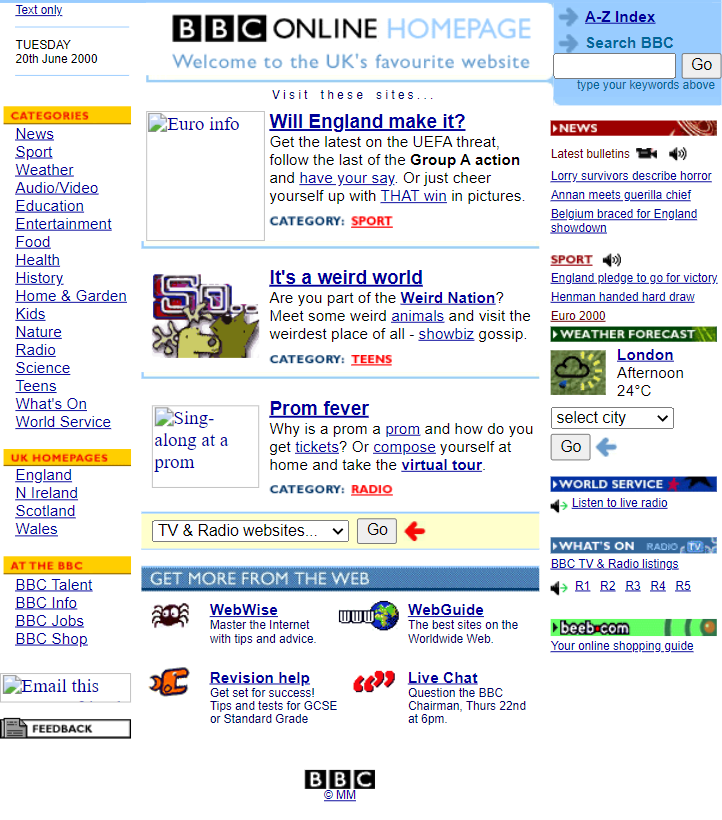
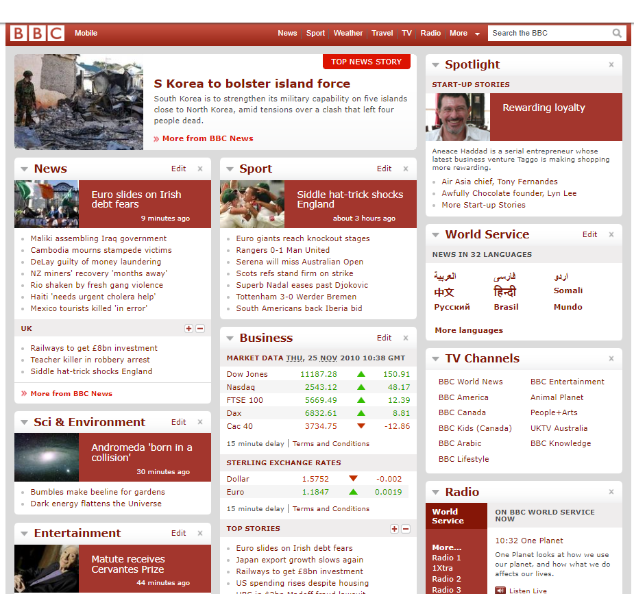
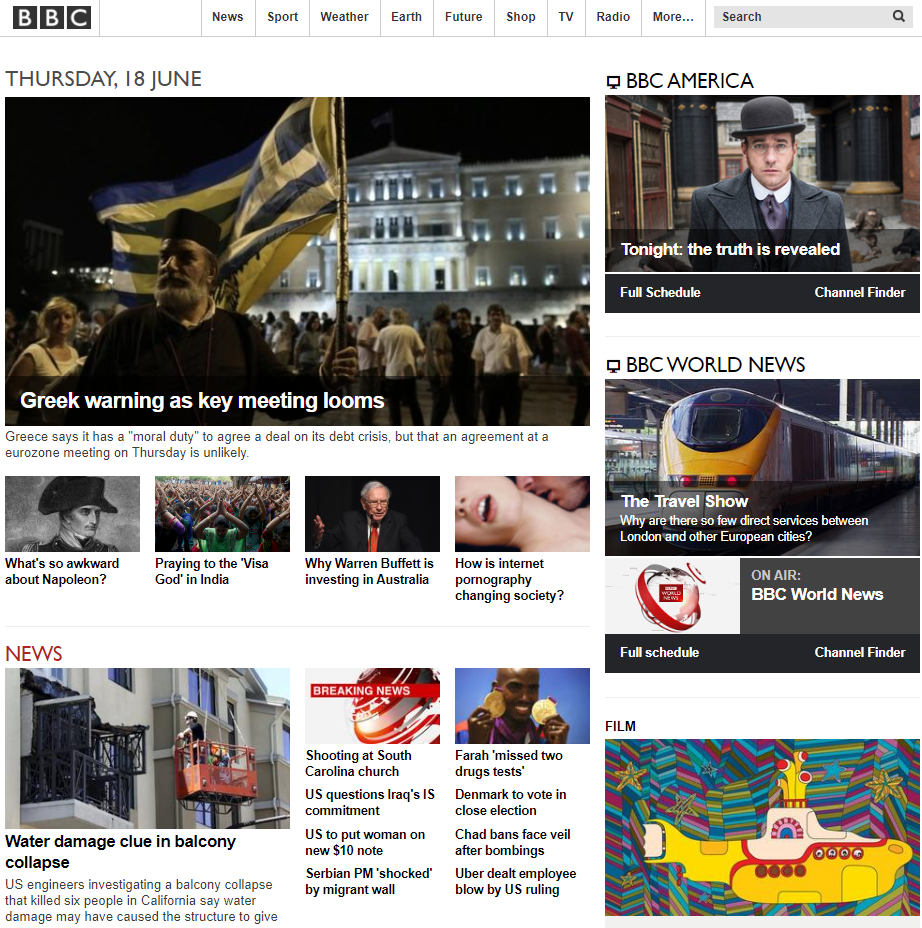
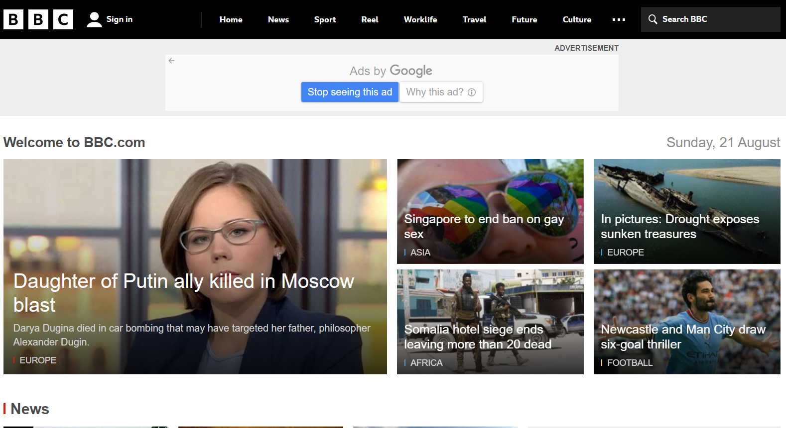

Qual era o o propósito inicial do site?
A princípio a BBC ONLINE era somente um site de notícias local, entregando somente notícias do Reino Unido, atualmente a bbc expandiu o seu território, agora eles cobrem boa parte dos países da Europa, Oceania e das Américas.
O site propósito mudou ao longo do tempo?
Houve uma mudança muito grande na organização das notícias, em 2000 todas as notícias recebiam meio que o mesmo destaque e ao decorrer dos primeiros 5 já é de se perceber
Quais os problemas que esse site tinha quando "novo" e quais têm agora?
2000:O site era muito poluído, não era centralizado, não havia nada de enfático, nenhuma notícia ganhava destaque e era muito fácil de se perder na leitura, há um campo de pesquisa porém ele está tão escondido que passa despercebido.
2005:O site continua poluído, tudo fica muito próximo ainda tornando fácil se perder na leitura, a barra de pesquisa continua despercebida.

2010:O site estava bem menos poluído, foi aplicado um sistema hierárquico nas notícias porém ainda sim tudo está muito “semelhante”.
2015:O sistema hierárquico foi aplicado de forma efetiva, declarando bem o que é de fato mais importante de forma organizada de acordo com os diferentes tópicos, porém, tudo está muito espremido, existe muito espaço que não é utilizado.
2020:O barra header de navegação poderia acompanhar a rolagem da tela para que o usuário possa navegar com facilidade, poderia haver algum filtragem com checkboxes ao lado esquerdo ou até mesmo no topo site.
Melhorias para os jovens de periferia que não possuem o hábito do uso da internet por computadores e não tem interesses por notícias:
O site poderia utilizar uma linguagem mais coloquial e objetiva, livre de artigos extensos tornando mais leve e fácil de compreender, poderia ser aplicada também o uso de personagens “famosos” dando essas notícias através de diálogos em curtas.